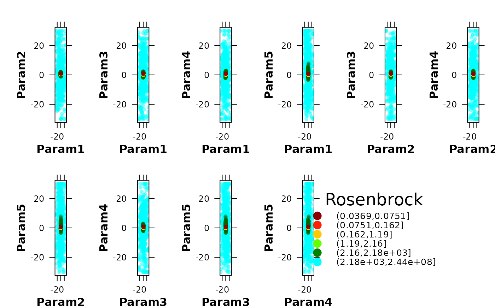
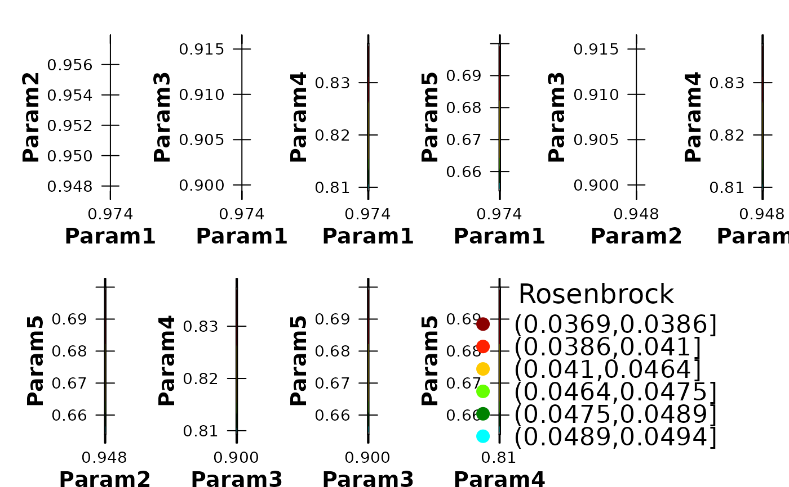

Pairwise dotty plots of parameter interactions coloured by objective-function performance
plot_NparOF.RdCreates a set of pairwise parameter plots for exploring how the objective function varies across the parameter space.
For n selected parameters, the function generates sum(1:(npar-1)) plot_2parOF panels, corresponding to all possible two-parameter combinations.
Each panel displays one pair of parameters on the axes and colours the sampled parameter sets according to their goodness-of-fit values. This provides a compact visual summary of parameter sensitivity, equifinality, behavioural regions, and parameter interactions, which is especially useful in hydrological calibration studies based on Monte Carlo, PSO, GLUE, or other ensemble-based workflows.
Usage
plot_NparOF(params, gofs, param.names=colnames(params),
MinMax=c(NULL,"min","max"), beh.thr=NA, nrows="auto",
gof.name="GoF", main=paste(gof.name, "Surface"), GOFcuts="auto",
colorRamp= colorRampPalette(c("darkred", "red", "orange", "yellow",
"green", "darkgreen", "cyan")), points.cex=0.7, alpha=0.65,
axis.rot=c(0, 0), verbose=TRUE)Arguments
- params
matrix or data.frame with one row per parameter set and one column per model parameter.
- gofs
numeric vector with the goodness-of-fit values associated with each row of
params, in the same order. Therefore,length(gofs)must be equal tonrow(params).- param.names
character vector with the names of the parameters to be displayed. It can be a subset of
colnames(params), allowing the user to focus on the parameters that are most relevant for a given hydrological analysis.- MinMax
character string indicating whether better model performance corresponds to minimising or maximising the objective function. Valid values are
c(NULL, "min", "max"). This argument is required whenbeh.thris used.If
MinMax="min", parameter sets with lower goodness-of-fit values are treated as better solutions and are plotted on top of poorer solutions. IfMinMax="max", the opposite ordering is used. WhenMinMax=NULL, no preference for minimisation or maximisation is assumed.- beh.thr
optional numeric threshold used to retain only ‘behavioural’ parameter sets, following the GLUE terminology.
If
MinMax="min", only parameter sets withgofs <= beh.thrare kept. IfMinMax="max", only parameter sets withgofs >= beh.thrare kept. This is useful when the goal is to visualise only the acceptable region of the parameter space instead of the full ensemble.- nrows
numeric value giving the number of rows in the multi-panel plotting layout. If
nrows="auto", the function computes the number of rows automatically from the number of panels to be produced.- gof.name
character string used as the title of the legend associated with the objective function values. Typical examples in hydrology are
"NSE","KGE","RMSE", or"PBIAS".- main
character string intended for the main title. It is currently not used by the implementation.
- GOFcuts
numeric vector defining the breakpoints used to convert
gofsinto performance classes for colouring the panels.If
GOFcuts="auto", the breakpoints are computed from quantiles ofgofs. The quantile probabilities depend onMinMax:if
MinMax=NULL:probs = c(0, 0.1, 0.25, 0.5, 0.75, 0.9, 1)if
MinMax="min":probs = c(0, 0.25, 0.5, 0.85, 0.9, 0.97, 1)if
MinMax="max":probs = c(0, 0.03, 0.1, 0.15, 0.5, 0.75, 1)
Automatic breakpoints are convenient for highlighting performance gradients within large calibration ensembles.
- colorRamp
function defining the colour ramp used to colour the points according to
gofs, or a character vector with colours from which such a ramp can be built.- points.cex
numeric value controlling the size of the plotted points.
- alpha
numeric value between 0 and 1 controlling colour transparency.
0means fully transparent and1means fully opaque.- axis.rot
numeric vector of length 2 giving the rotation angles, in degrees, for the left or bottom and right or top axis labels, respectively.
- verbose
logical value. If
TRUE, progress messages are printed during filtering, breakpoint computation, and panel generation.
Value
Produces a lattice-based multi-panel figure on the active graphics device. Each panel is generated internally through plot_2parOF and shows one pairwise parameter projection coloured by objective-function performance. The final panel contains the legend for the goodness-of-fit classes.
This type of display is particularly useful for diagnosing parameter identifiability, interaction effects, trade-offs, and behavioural regions in hydrological model calibration.
Author
Mauricio Zambrano-Bigiarini, mzb.devel@gmail.com
Examples
# Number of dimensions to be optimised
D <- 5
# Boundaries of the search space (Rosenbrock test function)
lower <- rep(-30, D)
upper <- rep(30, D)
# \donttest{
local({
# Setting the user temporal directory as working directory
oldwd <- getwd()
on.exit(setwd(oldwd), add = TRUE)
setwd(tempdir())
# Setting the seed
set.seed(100)
# Optimising the Rosenbrock test function and writing the results to text files
hydroPSO(fn=rosenbrock, lower=lower, upper=upper,
control=list(write2disk=TRUE))
# Reading the particle history generated by hydroPSO
particles <- read_particles(file="./PSO.out/Particles.txt", plot=FALSE)
# Visualising pairwise parameter interactions coloured by model performance
plot_NparOF(params=particles[["part.params"]],
gofs=particles[["part.gofs"]],
gof.name="Rosenbrock",
alpha=0.5)
# Focusing only on behavioural parameter sets can help reveal
# the most plausible regions of the parameter space
thr <- quantile(particles[["part.gofs"]], probs=0.10, na.rm=TRUE)
plot_NparOF(params=particles[["part.params"]],
gofs=particles[["part.gofs"]],
MinMax="min", beh.thr=thr,
gof.name="Rosenbrock",
alpha=0.6)
}) # local END
#>
#> ================================================================================
#> [ Initialising ... ]
#> ================================================================================
#>
#> [npart=40 ; maxit=1000 ; method=spso2011 ; topology=random ; boundary.wall=absorbing2011]
#>
#> [ user-definitions in control: write2disk=TRUE ]
#>
#>
#> ================================================================================
#> [ Writing the 'PSO_logfile.txt' file ... ]
#> ================================================================================
#>
#> ================================================================================
#> [ Running PSO ... ]
#> ================================================================================
#>
#> iter: 100 Gbest: 1.953E+00 Gbest_rate: 1.15% Iter_best_fit: 1.953E+00 nSwarm_Radius: 7.56E-04 |g-mean(p)|/mean(p): 8.88%
#> iter: 200 Gbest: 7.226E-01 Gbest_rate: 1.79% Iter_best_fit: 7.226E-01 nSwarm_Radius: 2.36E-04 |g-mean(p)|/mean(p): 7.46%
#> iter: 300 Gbest: 3.295E-01 Gbest_rate: 0.45% Iter_best_fit: 3.295E-01 nSwarm_Radius: 1.35E-04 |g-mean(p)|/mean(p): 6.39%
#> iter: 400 Gbest: 2.276E-01 Gbest_rate: 0.13% Iter_best_fit: 2.276E-01 nSwarm_Radius: 2.18E-05 |g-mean(p)|/mean(p): 1.03%
#> iter: 500 Gbest: 1.556E-01 Gbest_rate: 0.18% Iter_best_fit: 1.556E-01 nSwarm_Radius: 4.72E-05 |g-mean(p)|/mean(p): 3.32%
#> iter: 600 Gbest: 1.116E-01 Gbest_rate: 0.42% Iter_best_fit: 1.116E-01 nSwarm_Radius: 4.51E-05 |g-mean(p)|/mean(p): 3.16%
#> iter: 700 Gbest: 8.683E-02 Gbest_rate: 0.26% Iter_best_fit: 8.683E-02 nSwarm_Radius: 7.98E-05 |g-mean(p)|/mean(p): 3.16%
#> iter: 800 Gbest: 6.381E-02 Gbest_rate: 0.00% Iter_best_fit: 6.384E-02 nSwarm_Radius: 3.68E-05 |g-mean(p)|/mean(p): 2.75%
#> iter: 900 Gbest: 4.697E-02 Gbest_rate: 0.86% Iter_best_fit: 4.697E-02 nSwarm_Radius: 3.91E-05 |g-mean(p)|/mean(p): 4.31%
#> iter:1000 Gbest: 3.686E-02 Gbest_rate: 0.00% Iter_best_fit: 3.689E-02 nSwarm_Radius: 1.16E-05 |g-mean(p)|/mean(p): 1.15%
#>
#> [ Writing output files... ]
#>
#> |
#> ================================================================================
#> [ Creating the R output ... ]
#> ================================================================================
#>
#> [ Reading the file 'Particles.txt' ... ]
#> [ Total number of parameter sets: 40000 ]
#> [ Computed GOFcuts: 0.03686 0.07514 0.1619 1.191 2.156 2184 244200000 ]
#> [ Plotting 'Param1' vs 'Param2' ]
#> [ Plotting 'Param1' vs 'Param3' ]
#> [ Plotting 'Param1' vs 'Param4' ]
#> [ Plotting 'Param1' vs 'Param5' ]
#> [ Plotting 'Param2' vs 'Param3' ]
#> [ Plotting 'Param2' vs 'Param4' ]
#> [ Plotting 'Param2' vs 'Param5' ]
#> [ Plotting 'Param3' vs 'Param4' ]
#> [ Plotting 'Param3' vs 'Param5' ]
#> [ Plotting 'Param4' vs 'Param5' ]

#> [ Number of behavioural parameter sets: 4000 ]
#> [ Computed GOFcuts: 0.03686 0.03863 0.04095 0.04641 0.04748 0.04892 0.04944 ]
#> [ Plotting 'Param1' vs 'Param2' ]
#> [ Plotting 'Param1' vs 'Param3' ]
#> [ Plotting 'Param1' vs 'Param4' ]
#> [ Plotting 'Param1' vs 'Param5' ]
#> [ Plotting 'Param2' vs 'Param3' ]
#> [ Plotting 'Param2' vs 'Param4' ]
#> [ Plotting 'Param2' vs 'Param5' ]
#> [ Plotting 'Param3' vs 'Param4' ]
#> [ Plotting 'Param3' vs 'Param5' ]
#> [ Plotting 'Param4' vs 'Param5' ]

# } # donttest END